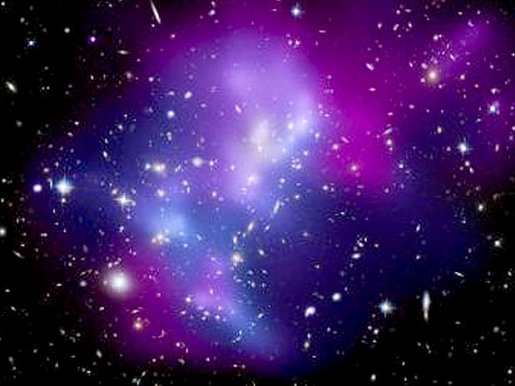
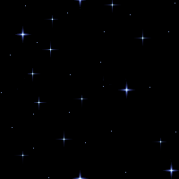
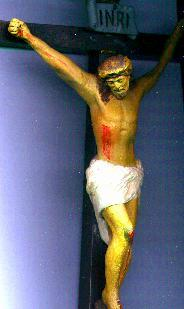
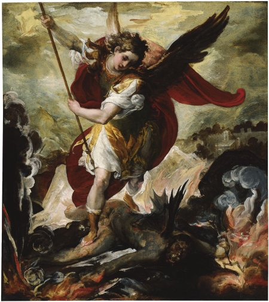
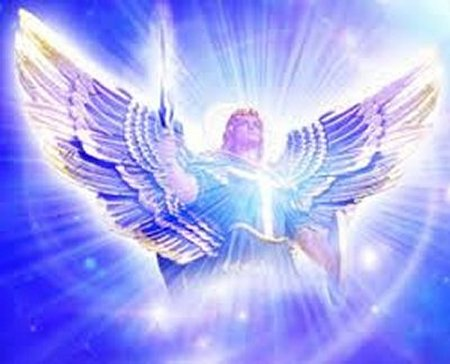
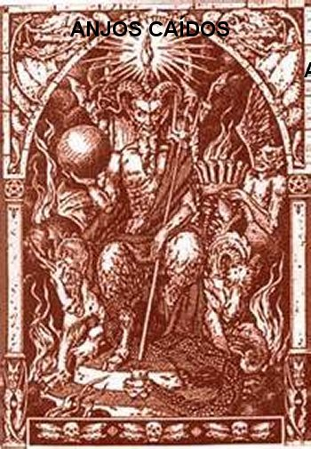

“O GRANDE PRÍNCIPE”
VENCEDOR DE LÚCIFER

Na aurora dos tempos, DEUS criou os Anjos e vivia sozinho com eles na imensidão do Paraíso Divino. Deu a cada um: dons, virtudes sobrenaturais, inteligência apurada, prerrogativas especiais e liberdade plena. Classificou-os dentro de uma notável Hierarquia Angélica, em nove Coros, sendo que cada Coro representa uma Classe de Anjos. Como boa organização, cada Coro Angélico possuía uma Chefia, e o SENHOR deixou como Chefe Supremo da multidão dos Anjos, o Comandante Lúcifer, um Anjo bonito, cheio de esplendor, cujo nome significa "portador da luz". O SENHOR, misericórdia infinita estimulou em cada Classe de Anjos os dons que lhes concedeu: o exercício do amor, a ciência, império, força, justiça, autoridade, zelo, e bondade; dons, que brilhavam com a perfeição que eles cultivavam como pedras preciosas, revelando o seu valor, o esplendor e a qualidade de cada membro.
Por outro lado, DEUS lhes proporcionou um imenso esplendor. É difícil conceber algo maior e mais bonito, que a maravilhosa visão dos Anjos, sublimes seres criados, que testemunharam e desfrutaram na aurora dos tempos, quando o mundo vindo do nada, apareceu na sua beleza original, e os próprios Anjos, divididos em milhares e milhares de pequenos grupos, todos cheios de esplendor, ocupavam os espaços infinitos. Quais e quantas foram às surpresas, as alegrias, e as emoções dos seus corações?
O teólogo M. Gasnier comenta: “Você pode imaginar que quando eles, os Anjos, contemplavam o esplendor do universo se desdobrando diante dos seus olhos, com toda beleza e esplendor, e sabendo Quem era o autor daquelas maravilhas, um entusiasmo transbordante deve ter vibrado em seus corações, e todos eles amorosamente devem ter cantado um hino de louvor e de ação de graças ao ETERNO DEUS CRIADOR. No entanto, não foi o que aconteceu. O Anjo não é um ser a quem uma linda cena e mesmo a criação da vida, por admiravelmente belo que seja, possa conquistar o seu coração, mesmo que apenas por um momento, isto por causa do seu imenso autocontrole. Certamente, os Anjos são capazes sim, de entusiasmo e de êxtase, mas depois de ter deliberado primeiramente e decidido em sua completa liberdade”.
“Eles receberam
este dom num tempo magnífico de liberdade! DEUS lidava com os Anjos como
criaturas inteligentes outorgando-lhes o pleno direito de 
“O SENHOR, por seu lado, sempre considerou os Anjos como magníficos presentes! Entretanto, era necessário que da parte Deles, dos Anjos, a posse do BEM SUPREMO (DEUS) fosse para Eles uma perfeita recompensa, em face de uma escolha meritória. Assim, os Anjos, como posteriormente a humanidade, antes de alcançar a plena visão de DEUS, tiveram de ser submetidos a um “teste de fidelidade”.
“Desse modo, Diante do Universo criado, a primeira disposição dos Espíritos Celestes foi uma silenciosa contemplação. Seus olhos admiravam e contemplavam o esplendor do Universo, mas em respeitoso silêncio; então, instantaneamente, cada um na plenitude da sua liberdade e com decisão irrevogável, fez a sua escolha: se achavam bonito, ou se faltava alguma coisa”.
“Para a humanidade a santificação (a busca de DEUS) é um trabalho longo e lento; para os Anjos, porém é bem diferente, porque Eles não estão sujeitos à lei da progressividade (ou seja, o domínio da compreensão e convicção humana é lento e acontece ao longo da existência); para os Anjos vivendo fora da sucessão e dos acontecimentos temporais, sua escolha e plena decisão são instantâneas”.
“Por isso, a prova para Eles consistiu num único ato, em que foi concentrada toda a atitude deliberativa, toda a energia e o amor de que eram capazes. E com esta plena liberdade no momento do Grande Teste, alguns optaram por DEUS, e outros por Lúcifer”.
São Tomás de Aquino
também comentou: “Este
pecado cometido pelos Anjos no início da criação é um mistério inescrutável,
pois a perfeição da natureza celeste naturalmente deveria convidá-los a adoração
e gratidão eterna. O homem foi submetido à tentação e sucumbiu a solicitação de
Eva, que foi 
Muitos teólogos têm especulado que a razão para a rebelião dos Anjos foi o Mistério do VERBO ENCARNADO. JESUS lhes foi mostrado em conjunto, diante de todos os Anjos reunidos, revelando a Sua Natureza Humana no futuro, e o seu estado de completa humilhação no exercício da Sua Sublime Missão Redentora, sendo rejeitado, flagelado e crucificado pelos judeus, e aos Anjos, “foram convidados a adorá-lo”. Uma maioria dos Anjos concordou e se prostraram, adorando o SENHOR JESUS, compreendendo a sublimidade da Sua Divina Missão de Amor, enquanto uma quantidade de Anjos se sentiram: “desprezados e insultados por aquele pedido”, e eles não aceitaram, se recusaram a reconhecer como MESTRE um DEUS com natureza humana.
Desse modo, a tremenda queda dos Anjos foi, portanto, causada pela própria e definitiva escolha dos mesmos. Eles desviaram os olhos de DEUS e de seus grandes projetos, para se fixar nas suas perfeições e complacências, ensoberbecendo, exercitando uma vaidade abominável, esquecendo-se do SENHOR, que tão generosamente SE doou a Eles. Eles queriam, por si só, serem "como deus", viver e reinar livremente, atribuindo a si mesmo a sua perfeição, a sua glória e a sua felicidade. Segundo o Profeta Isaias, no seu delírio de onipotência, Lúcifer dizia no seu coração: “Hei de subir até o Céu, acima das estrelas de DEUS colocarei o meu trono, estabelecer-me-ei na montanha da Assembléia, nos confins do norte. Subirei acima das nuvens, tornar-me-ei semelhante ao ALTÍSSIMO”. (Is 14, 13-14) Os Anjos Revoltosos se recusaram a servirem da sua liberdade para render ao CRIADOR a honra e a obediência que LHE é devida. Eles caíram por orgulho. O orgulho foi de fato o único pecado dos Anjos Caídos, espíritos puros, que se sentiram totalmente capazes. Era a prova para Eles que consistiu num único ato, e no qual foi concentrada toda a atitude deliberativa, toda a energia e o amor de que eram capazes de manifestar.
Lúcifer proclamou a plenos pulmões:
- “Não servirei”...
Enquanto um inquietante silêncio envolveu a eternidade, deixando perplexa a maioria dos Anjos, os outros amigos de Lúcifer, que aderiram a “revolta” confirmaram:
- “Também não serviremos”...
Miguel que era um Anjo categorizado, inflamado de zelo amoroso ao CRIADOR e indignado com aquela infame e incompreensível rejeição, se projetou a frente dos Anjos e com voz forte e sonora bradou firme:
- “QUEM É COMO DEUS”?
E com plena liberdade de escolha, alguns Anjos optaram por DEUS, e outros por Lúcifer. Este pecado cometido pelos Anjos Caídos no início da criação é um mistério incompreensível, pela ausência de ternura, do carinho de cada um e principalmente pela falta do amor que devia existir em seus corações, pois a perfeição da natureza celeste nos faz entender de maneira clara e evidente, que a gratidão e o amor dos Anjos ao SENHOR não tem medidas, porque pela própria natureza Angélica, o amor deve existir em dose incalculável, deve ser de um fervor incomparável, completamente dedicado e eterno.
BATALHA NO CÉU
E assim, o Livro do Apocalipse
descreve: “Houve então uma
batalha no Céu: Miguel e seus Anjos guerrearam contra o Dragão. O Dragão
batalhou, juntamente 
Na verdade, é difícil de imaginar como pode ter acontecido este confronto gigantesco entre dois exércitos de espíritos livres e de dimensões incalculáveis. Não podemos considerar nesta batalha o uso de armas convencionais que destroem a carne e mata as pessoas, e nem pensar no uso de equipamentos de guerra que produz uma terrível destruição, assim como um cruel e impiedoso derramamento de sangue. Não, não foi assim. Eram dois exércitos de Espíritos Celestes... As armas do exército de Lúcifer eram constituídas pela força do orgulho, da vaidade interior, da insubordinação e do impressionante desprezo a Vontade de DEUS; as armas do outro exército, do exército Celeste, que logo Miguel assumiu o Comando, eram constituídas pela força da humildade, da fidelidade, do amor puro e sincero, e do respeito ao Altíssimo. Então se compreende que a batalha se realizou pelo poder das mentes e da força das vozes dos Anjos. E foi assim que as mentes concentradas no “bem” acabaram por destruir as “mentes malignas”.
O escritor francês Jacques Bossuet escreveu: “Diante do mistério Divino e da sua infinita transcendência, gritos e cantos ressoaram, cantos de amor e gritos de ódio: hinos de louvor e ações de graças, por um lado, gritos profanos da autonomia do outro. Os Anjos dos dois grupos livremente escolheram propósitos não só diferentes, mas opostos, seguindo estradas que já não poderiam convergir na mesma direção. Lúcifer havia assumido este desafio, levando consigo outros Anjos, mas era a sua própria grandeza o instrumento da sua destruição. Ele tinha conhecimento de que devia colocar a sua felicidade a serviço de DEUS, mas, diz São Tomás de Aquino”,"ele não considerou esta verdade”. “Ao invés de assumir o seu dever e o seu verdadeiro lugar no mundo, insubordinou-se em seu coração, quis ser independente e dominar tudo”.
Apenas com a intenção de buscar imaginar o tipo de armas usadas no combate entre os Anjos, existem entre nós, diversos estudos que comprovam a força e o poder da mente e da voz que verdadeiramente são manifestações espirituais. Como exemplo, o escritor japonês Marasu Emoto, é citado com experiências concretas, mostrando que “desejar o bem ou o mal, pode transferir uma energia positiva ou negativa”; e mais, “quanto maior for à emoção, maior concentração e maior a força do pensamento, maior e mais poderosa será a energia transmitida pelo cérebro”. O japonês conseguiu murchar uma rosa vermelha bem viçosa com a “força do pensamento”. A cantora americana Ella Fitzgerald conseguiu quebrar uma taça de vidro com a “força da sua voz”.Também testemunham que o tenor italiano Luciano Pavarotti com “a força e intensidade da voz” trincou um espelho com 2 milímetros de espessura.
Assim, embora respeitando a incalculável diferença que existe entre as duas realidades, dos Anjos e das criaturas humanas, podemos imaginar através destas modestas comparações, o tipo de munição utilizada que afastou os adversários do Arcanjo São Miguel e os precipitou para longe do Paraíso do CRIADOR.
Para punir o crime e fulminar os Anjos rebeldes, o que era necessário a DEUS? A respiração? Apenas um olhar? Nada era necessário... Mas DEUS não interferiu, tinha outros projetos. Para executar o primeiro ato da Sua Justiça, o SENHOR desprezou agir por SI Mesmo e deixou os acontecimentos a cargo dos Anjos Bons.
Enquanto Lúcifer recebeu o castigo eterno pelo seu orgulho, Miguel entrou na glória do Céu, onde foi designado "arquiestrategista", um título que o PAI ETERNO lhe cumprimentou (conforme concepção do Padre Stanzione). E para recompensar a sua lealdade e o triunfo sobre Satan's, DEUS entregou-lhe sua espada vitoriosa, que Ele a usaria (simbolicamente) para lutar contra os inimigos do Altíssimo, até o “Fim dos Tempos”, e lhe deu o primeiro lugar entre todos os Anjos, lugar que foi deixado vago desde a queda de Lúcifer. Além disso, ele ganhou o nome que “Ele mesmo usou” no momento de repulsa, ao dar o grito de indignação contra os rebeldes, e de fiel amor a DEUS, como firme reação de desagrado contra a audácia de Lúcifer e dos Anjos que o acompanharam. Ele gritou: “Mi Ka El” (são três palavras hebraicas que significam: "Quem é como DEUS?"). Assim, o seu nome MIGUEL em hebraico (Mi Ka El) é uma expressão que engloba três sentidos: a força da sua alma fiel a DEUS; o seu grito de guerra contra os rebeldes; o qual, por fim, se tornou o seu troféu vitorioso, o seu nome.
O teólogo M. Gasnier observa: “MI KA EL, viu durante os séculos crescerem a sua devoção, assim na Terra, como era no Céu em todos aqueles que combateram o bom e fiel combate. Este nome eleva os corações e as condições das pessoas; é uma espada que penetra e elimina o mal. É um escudo e eficaz proteção contra os inimigos visíveis e invisíveis. É o nome mais poderoso depois de NOSSO SENHOR e de MARIA, SUA MÃE SANTÍSSIMA".
MISSÃO DO ARCANJO
A luta iniciada no Céu continua firme no mundo. O amor e o ódio em relação a DEUS, que, respectivamente, originou a cidade de DEUS e a do Diabo, em que, uma é fortalecida pelo amor fiel, e a outra reforçada pelo ódio dos corações empedernidos, impedindo que esses dois reinos parem de lutar, assim continuarão até o Final dos Tempos, quando o SENHOR no derradeiro combate, eliminará a “morte” , o último adversário.
Além do testemunho do Apocalipse (Livro da Revelação), que narra as batalhas de Miguel contra os Anjos rebeldes, a Bíblia faz menção ao Príncipe da Milícia Celeste (Miguel) em três importantes passagens no Livro de Daniel e uma citação na Epístola de São Judas Tadeu.
LIVRO DO PROFETA DANIEL

Na continuidade do texto, o mesmo personagem que apareceu a Daniel, novamente se refere ao Arcanjo Miguel:
"Então ele (o personagem) disse: Sabes por que vim ter contigo? Mas vou anunciar-te o que está escrito no Livro da Verdade. Tenho de voltar para combater o Príncipe da Pérsia; quando eu tiver partido deverá vir o Príncipe de Javã. Ninguém me presta auxílio para estas coisas senão Miguel (o Arcanjo), vosso Príncipe, meu apoio para me prestar auxílio e me sustentar. E agora, vou anunciar-te a verdade". (Dn 10,20-21; 11,1-2).
Nestas passagens, um chefe é atribuído ao reino da Pérsia, outro chefe aos Gregos, e ainda outro chefe aos Israelitas. Esses líderes não são homens, pois o chefe do reino da Pérsia é distinto do rei da Pérsia, e também, devemos lembrar que Israel nunca teve um líder temporal, com o nome de Miguel.
Na opinião de muitos Sacerdotes e teólogos, esses líderes podem ser os Anjos encarregados da supervisão e custódia das nações. Ora, o Arcanjo São Miguel já estava designado como "o grande chefe" , também responsável pela proteção de Israel. O livro fala de uma discussão durante vários dias entre os Anjos que Guardavam as Nações, os quais manifestavam interesses diferentes. Esta disputa é considerada de tal forma, que para esses Anjos, a vontade de DEUS permanece um Mistério sobre a situação que lhes interessa. Por esta razão, cada um exerce a sua influência no caminho que lhes parece “mais consistente com o bem”. Todavia, uma vez conhecida à Vontade Divina pela clara decisão de DEUS, todos eles respeitaram e aceitaram, e assim o Arcanjo São Miguel (aqui mencionado pela terceira vez) realiza a libertação do povo israelita. (Dn 12, 1).
EPÍSTOLA DE SÃO JUDAS TADEU
São Judas, em
sua epístola, apresenta um acontecimento malicioso e sagaz, nascido das
artimanhas e tramas de satanás, que incide com diversas tentativas para se 
E, no entanto, o arcanjo Miguel, quando disputava com o diabo, discutindo a respeito do corpo de Moisés, não se atreveu a pronunciar uma sentença injuriosa contra ele, mas limitou-se a dizer: “O Senhor te repreenda”! (Jd 1,9).
São Miguel disputava com o diabo a respeito do corpo de Moisés. É uma luta concebida entre dois espíritos inteligentes, um dos quais defende o plano Divino, enquanto o outro sorrateiramente o combate, visando vantagens. São Judas, no entanto, não fornece nenhuma explicação sobre o motivo da disputa.
O Livro Deuteronômio nos diz que Moisés morreu na terra de Moab, no monte Nebo, e que Josué afirma que ele (Moisés), foi enterrado na terra de Moab, defronte Bet-Fegor, e que ninguém sabia o local exato da sua sepultura. (Dt 34,5-6)
Neste vale também foi homenageada uma divindade moabita chamada Beelfegor. Por essa razão, foram formuladas várias hipóteses sobre o motivo da disputa entre Satan's e o Arcanjo. Primeiro se supõem, que Satan's queria que a honra da sepultura fosse recusada a Moisés, porque ele havia matado um egípcio; outra hipótese afirma que o diabo desejava que o túmulo de Moisés fosse conhecido e visitado no Monte Nebo, para que se tornasse aos israelitas um objeto de idolatria; ou ainda, o maligno teria se oposto à sepultura de Moisés no Vale, por medo de que a proximidade dos restos do Profeta da cidade mais próxima, fosse obstáculo ao culto por parte do povo, para a adoração de Moisés, como se fosse um ídolo (o que aliás, era o que satã queria, para enfraquecer a fé israelita). No entanto, o glorioso Arcanjo enviado pelo SENHOR, apareceu na frente de Lúcifer, com poder e incomensurável humildade. Miguel tem tão profunda idéia da soberana transcendência dos direitos do seu MESTRE, que confundiu o seu oponente, que se calou e se eclipsou. Assim, ao invés de responder a Satan's com a autoridade que lhe deu a vitória antiga, prefere que a sentença seja pronunciada pelo próprio DEUS: "Que o Senhor te repreenda". Santo Ambrósio identifica um contraste incomensurável entre a prudência do Arcanjo e o descaramento do maligno.
ESCOLHIDO PATRONO
No Antigo Testamento, o Arcanjo era o patrono do povo escolhido, ou seja, do povo judeu. Este é um fato que raramente recebe atenção. Quando a Igreja tomou o lugar da lei judaica, São Miguel foi transferido para o “novo povo escolhido, a Igreja de CRISTO”. Isso nos leva a perguntar qual é atualmente a relação de São Miguel com os judeus de hoje. Certamente Ele, o Grande e Inteligente Comandante Celeste não vai esquecê-los, não é verdade? Uma mãe não esquece o seu filho, mesmo que a criança esteja perdida, caminhando em estradas ruins. O Profeta Isaias já nos afirmava esta verdade. (Is 49,15)
Quando a Igreja Católica, que é a herdeira das promessas feitas a Abraão, substituiu a sinagoga judaica, oficialmente a Igreja recorreu à mesma e preciosa proteção do Arcanjo São Miguel. Em Roma, o Castelo do Santo Anjo (Castel de Sant’ Angelo) e a bela estatua em cima do Castelo, são monumentos que testemunham a fé dos Pontífices romanos e da sua gratidão a sempre presente e fiel proteção, que tem recebido do Arcanjo São Miguel.